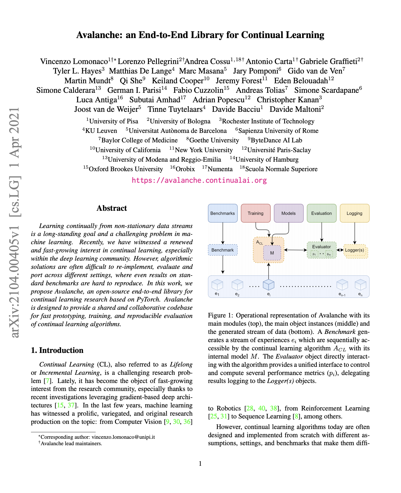
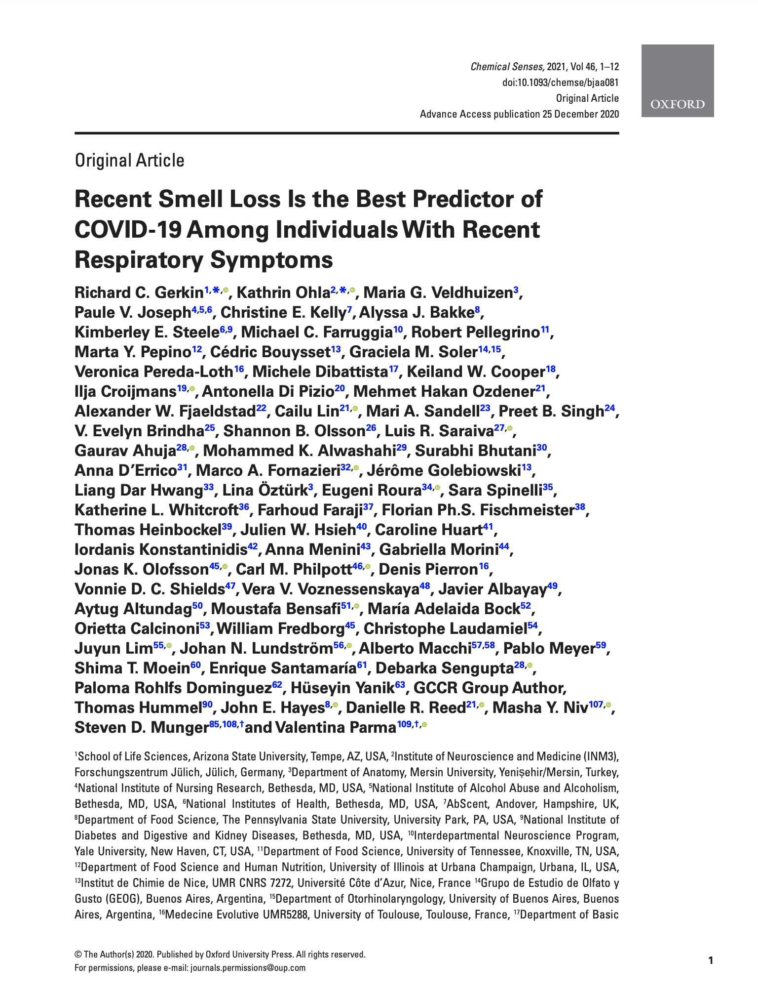
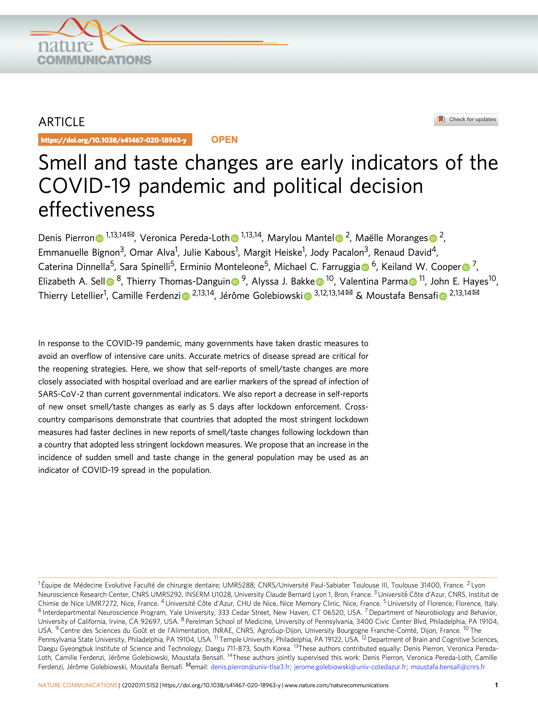
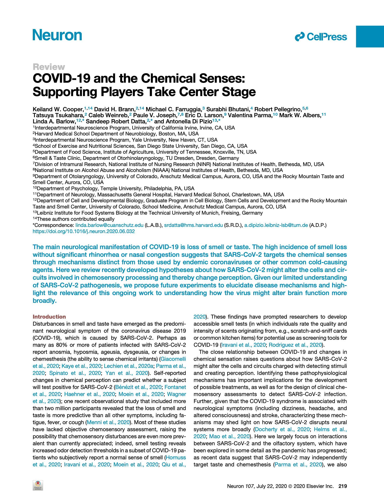
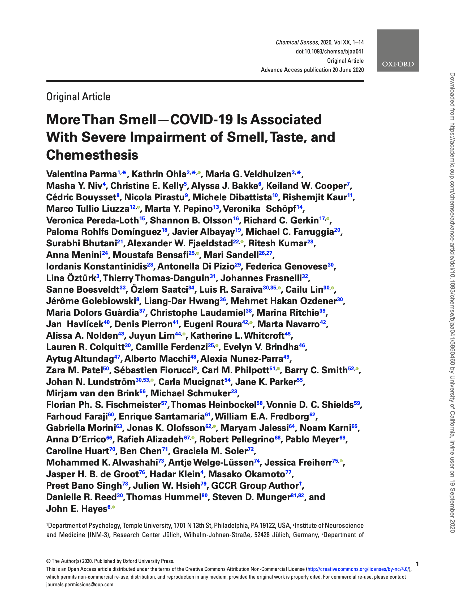
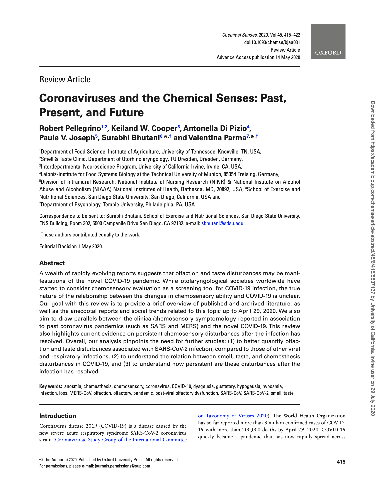
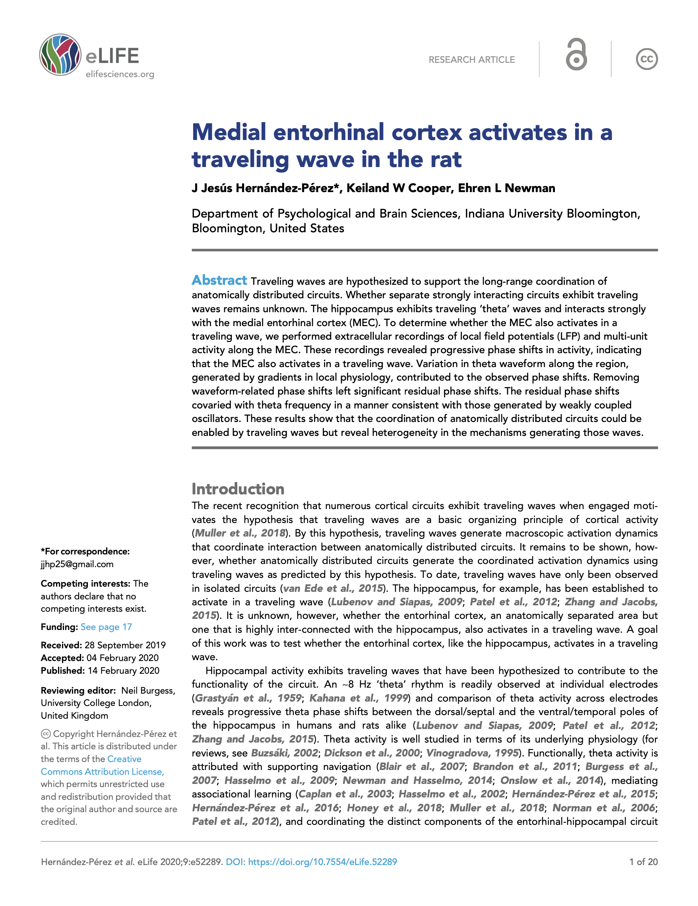
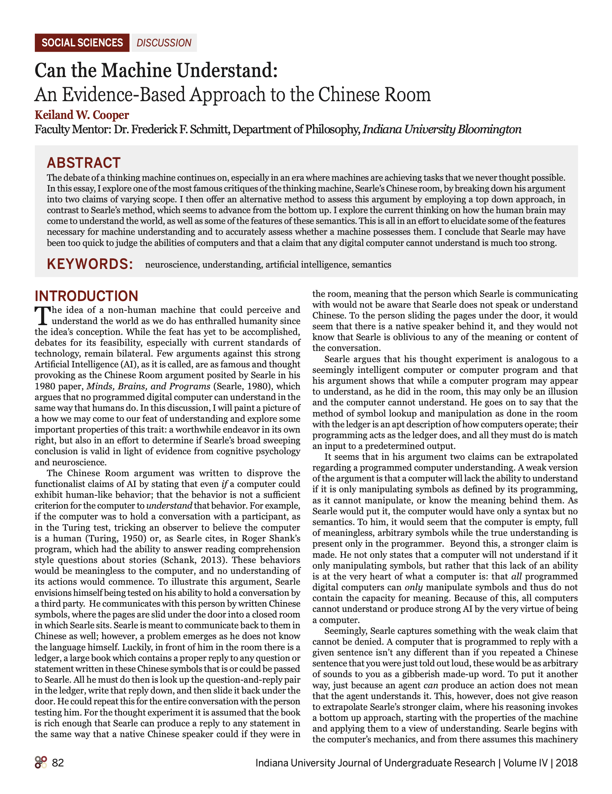

Avalanche: an End-to-End Library for Continual Learning
Continual learning is an attempt to create more humanlike artificial intelligence, by providing it the tools to learn without forgetting over its lifetime, and adapt to a constantly changing environment. Recently, we have witnessed a renewed and fast-growing interest in research to attempt to solve this problem, particularly with deep neural networks. However, these algorithms are difficult to build, and sometimes struggle with reproducibility. To aid this problem, we propose Avalanche, an open-source end-to-end library for continual learning research, designed to provide a shared and collaborative environment for fast prototyping, training, and reproducible evaluation of continual learning algorithms.Avalanche: an End-to-End Library for Continual Learning
Learning continually from non-stationary data streams is a long-standing goal and a challenging problem in machine learning. Recently, we have witnessed a renewed and fast-growing interest in continual learning, especially within the deep learning community. However, algorithmic solutions are often difficult to re-implement, evaluate and port across different settings, where even results on standard benchmarks are hard to reproduce. In this work, we propose Avalanche, an open-source end-to-end library for continual learning research based on PyTorch. Avalanche is designed to provide a shared and collaborative codebase for fast prototyping, training, and reproducible evaluation of continual learning algorithms.Avalanche: an End-to-End Library for Continual Learning
Reference:
Lomonaco, V., Pellegrini, L., Cossu, A., Carta, A., Graffieti, G., Hayes, T. L., Cooper, K. W., ... & Maltoni, D. (2021). Avalanche: an End-to-End Library for Continual Learning. arXiv preprint arXiv:2104.00405.

Recent Smell Loss Is the Best Predictor of COVID-19 Among Individuals With Recent Respiratory Symptoms
The global presence of COVID-19’s strongest neurological symptom, loss of smell, we sought out to further understand if this sensory dysfunction could aid predicting a positive diagnosis. Using crowd-sourced global participant self reports of their olfactory deficits and computational modeling, we found that indeed smell loss is a strong predictor of a COVID-19 diagnosis. We found that 50% of our participants recovered within 40 days of respiratory symptom onset, and that rating smell loss on a 1-10 scale provided necessary granularity for stronger predictions. Based on these findings, and to aid clinicians and contact tracers in identifying individuals with a high likelihood of having COVID-19, we developed a novel tool to screen for olfactory loss, ODoR-19.Recent Smell Loss Is the Best Predictor of COVID-19 Among Individuals With Recent Respiratory Symptoms
In a preregistered, cross-sectional study, we investigated whether olfactory loss is a reliable predictor of COVID-19 using a crowdsourced questionnaire in 23 languages to assess symptoms in individuals self-reporting recent respiratory illness. We quantified changes in chemosensory abilities during the course of the respiratory illness using 0–100 visual analog scales (VAS) for participants reporting a positive (C19+; n = 4148) or negative (C19−; n = 546) COVID-19 laboratory test outcome. Logistic regression models identified univariate and multivariate predictors of COVID-19 status and post-COVID-19 olfactory recovery. Both C19+ and C19− groups exhibited smell loss, but it was significantly larger in C19+ participants (mean ± SD, C19+: −82.5 ± 27.2 points; C19−: −59.8 ± 37.7). Smell loss during illness was the best predictor of COVID-19 in both univariate and multivariate models (ROC AUC = 0.72). Additional variables provide negligible model improvement. VAS ratings of smell loss were more predictive than binary chemosensory yes/no-questions or other cardinal symptoms (e.g., fever). Olfactory recovery within 40 days of respiratory symptom onset was reported for ~50% of participants and was best predicted by time since respiratory symptom onset. We find that quantified smell loss is the best predictor of COVID-19 amongst those with symptoms of respiratory illness. To aid clinicians and contact tracers in identifying individuals with a high likelihood of having COVID-19, we propose a novel 0–10 scale to screen for recent olfactory loss, the ODoR-19. We find that numeric ratings ≤2 indicate high odds of symptomatic COVID-19 (4 < OR < 10). Once independently validated, this tool could be deployed when viral lab tests are impractical or unavailable.Recent Smell Loss Is the Best Predictor of COVID-19 Among Individuals With Recent Respiratory Symptoms
Reference:
Gerkin, R. C., Ohla, K., Veldhuizen, M. G., Joseph, P. V., Kelly, C. E., Bakke, A. J., Cooper, K. W., ... & Parma, V. (2020). Recent smell loss is the best predictor of COVID-19 among individuals with recent respiratory symptoms. Chemical Senses.Recent Smell Loss Is the Best Predictor of COVID-19 Among Individuals With Recent Respiratory Symptoms

Smell and taste changes are early indicators of the COVID-19 pandemic and political decision effectiveness
Smell and taste disturbances are stand-out symptoms of COVID-19, but might these symptoms offer predictive power as an indicator for the spread of the pandemic? Here, we use smell and taste self-reported symptoms to model the spread of the virus, and assess their use as a metric. We find that not only are they indicative of the spread of the virus, but more closely adhere to the reported case numbers and hospital overload than existing government metrics. Though further studies are needed, this may be used as a first step towards more accurate models to predict the spread of COVID-19 and stress on the healthcare system.Smell and taste changes are early indicators of the COVID-19 pandemic and political decision effectiveness
In response to the COVID-19 pandemic, many governments have taken drastic measures to avoid an overflow of intensive care units. Accurate metrics of disease spread are critical for the reopening strategies. Here, we show that self-reports of smell/taste changes are more closely associated with hospital overload and are earlier markers of the spread of infection of SARS-CoV-2 than current governmental indicators. We also report a decrease in self-reports of new onset smell/taste changes as early as 5 days after lockdown enforcement. Cross-country comparisons demonstrate that countries that adopted the most stringent lockdown measures had faster declines in new reports of smell/taste changes following lockdown than a country that adopted less stringent lockdown measures. We propose that an increase in the incidence of sudden smell and taste change in the general population may be used as an indicator of COVID-19 spread in the population.Smell and taste changes are early indicators of the COVID-19 pandemic and political decision effectiveness
Reference:
Pierron, D., Pereda-Loth, V., Mantel, M. et al. Smell and taste changes are early indicators of the COVID-19 pandemic and political decision effectiveness. Nat Commun 11, 5152 (2020). https://doi.org/10.1038/s41467-020-18963-ySmell and taste changes are early indicators of the COVID-19 pandemic and political decision effectiveness

COVID-19 and the Chemical Senses: Supporting Players Take Center Stage
The main neurological symptom of COVID-19 is loss of smell and taste. Interestingly, given that many patients with COVID-19 report minimal if any nasal congestion, the virus may use mechanisms that are distinct from similar viruses to result in these symptoms. This work reviewed the main hypothesis of how the COVID-19 virus may be affecting the cells and circuits which contribute to the perception of smell and taste. We highlight an array of findings which point to the idea that the virus may not target neurons directly, but the cells which support them, and also explore the likelihood of the virus altering normal brain function given the current evidence. We also propose specific experiments which need to be conducted to further understand the interaction between the virus and smell and taste perception.COVID-19 and the Chemical Senses: Supporting Players Take Center Stage
The main neurological manifestation of COVID-19 is loss of smell or taste. The high incidence of smell loss without significant rhinorrhea or nasal congestion suggests that SARS-CoV-2 targets the chemical senses through mechanisms distinct from those used by endemic coronaviruses or other common cold-causing agents. Here we review recently developed hypotheses about how SARS-CoV-2 might alter the cells and circuits involved in chemosensory processing and thereby change perception. Given our limited understanding of SARS-CoV-2 pathogenesis, we propose future experiments to elucidate disease mechanisms and highlight the relevance of this ongoing work to understanding how the virus might alter brain function more broadly.COVID-19 and the Chemical Senses: Supporting Players Take Center Stage
Reference:
Cooper, K. W., Brann, D. H., Farruggia, M. C., Bhutani, S., Pellegrino, R., Tsukahara, T., Weinreb, C., Joseph, P. V., Larson, E. D., Parma, V., Albers, M. W., Barlow, L. A., Datta, S. R., & Di Pizio, A. (2020). COVID-19 and the Chemical Senses: Supporting Players Take Center Stage. Neuron, 107(2), 219–233. https://doi.org/10.1016/j.neuron.2020.06.032COVID-19 and the Chemical Senses: Supporting Players Take Center Stage
COVID-19 and the Chemical Senses: Supporting Players Take Center Stage

More than smell – COVID-19 is associated with severe impairment of smell, taste, and chemesthesis
Based upon multiple reports of COVID-19 patients suffering from smell loss, this work was motivated to implement a large-scale international study to quantify the symptoms. An effort of the Global Consortium for Chemosensory Research, in the first 11 days over 4000 participants with a positive COVID-19 diagnosis completed a multifaceted questionnaire surrounding and distangeling the three main chemosensory modalities: smell, taste, and chemesthesis (ie. spicy or menthol perception). The findings of the study point to COVID-19 affecting all three modalities, with few reports of nasal congestion suggesting a distinct mechanism for the virus.More than smell – COVID-19 is associated with severe impairment of smell, taste, and chemesthesis
Recent anecdotal and scientific reports have provided evidence of a link between COVID-19 and chemosensory impairments such as anosmia. However, these reports have downplayed or failed to distinguish potential effects on taste, ignored chemesthesis, and generally lacked quantitative measurements. Here, we report the development, implementation and initial results of a multi-lingual, international questionnaire to assess self-reported quantity and quality of perception in three distinct chemosensory modalities (smell, taste, and chemesthesis) before and during COVID-19. In the first 11 days after questionnaire launch, 4039 participants (2913 women, 1118 men, 8 other, ages 19-79) reported a COVID-19 diagnosis either via laboratory tests or clinical assessment. Importantly, smell, taste and chemesthetic function were each significantly reduced compared to their status before the disease. Difference scores (maximum possible change ±100) revealed a mean reduction of smell (-79.7 ± 28.7, mean ± SD), taste (-69.0 ± 32.6), and chemesthetic (-37.3 ± 36.2) function during COVID-19. Qualitative changes in olfactory ability (parosmia and phantosmia) were relatively rare and correlated with smell loss. Importantly, perceived nasal obstruction did not account for smell loss. Furthermore, chemosensory impairments were similar between participants in the laboratory test and clinical assessment groups. These results show that COVID-19-associated chemosensory impairment is not limited to smell, but also affects taste and chemesthesis. The multimodal impact of COVID-19 and lack of perceived nasal obstruction suggest that SARS-CoV-2 infection may disrupt sensory-neural mechanisms.More than smell – COVID-19 is associated with severe impairment of smell, taste, and chemesthesis
Reference:
Parma, V., Ohla, K., Veldhuizen, M. G., Niv, M. Y., Kelly, C. E., Bakke, A. J., Cooper, K. W., Bouysset, C., Pirastu, N., Dibattista, M., Kaur, R., Liuzza, M. T., Pepino, M. Y., Schöpf, V., Pereda-Loth, V., Olsson, S. B., Gerkin, R. C., Rohlfs Domínguez, P., … Albayay, J. (2020). More Than Smell—COVID-19 Is Associated With Severe Impairment of Smell, Taste, and Chemesthesis. Chemical Senses. https://doi.org/10.1093/chemse/bjaa041More than smell – COVID-19 is associated with severe impairment of smell, taste, and chemesthesis

Coronaviruses and the Chemical Senses: Past, Present, and Future
A growing number of reports implicating smell and taste loss may be an associated symptom with the novel COVID-19 virus. This review examines the current reports and scientific evidence for these symptoms up until April 29 2020, as well as to provide an overview of the reports of smell and taste loss with past coronavirus pandemics, such as SARS or MERS. We also examine the evidence for the persistence of the symptoms. The analysis pinpoints the need for further studies to quantify smell and taste loss associated with COVID-19, further studies to understand the relationship between the sensory modalities affected by the virus, and further studies to understand how long these symptoms may last.Coronaviruses and the Chemical Senses: Past, Present, and Future
A wealth of rapidly evolving reports suggests that olfaction and taste disturbances may be manifestations of the novel COVID-19 pandemic. While otolaryngological societies worldwide have started to consider chemosensory evaluation as a screening tool for COVID-19 infection, the true nature of the relationship between the changes in chemosensory ability and COVID-19 is unclear. Our goal with this review is to provide a brief overview of published and archived literature, as well as the anecdotal reports and social trends related to this topic up to April 29, 2020. We also aim to draw parallels between the clinical/chemosensory symptomology reported in association to past coronavirus pandemics (such as SARS and MERS) and the novel COVID-19. This review also highlights current evidence on persistent chemosensory disturbances after the infection has resolved. Overall, our analysis pinpoints the need for further studies: (1) to better quantify olfaction and taste disturbances associated with SARS-CoV-2 infection, compared to those of other viral and respiratory infections, (2) to understand the relation between smell, taste, and chemesthesis disturbances in COVID-19, and (3) to understand how persistent are these disturbances after the infection has resolved.Coronaviruses and the Chemical Senses: Past, Present, and Future
Reference:
Pellegrino, R., Cooper, K. W., Di Pizio, A., Joseph, P. V., Bhutani, S., & Parma, V. (2020). Coronaviruses and the Chemical Senses: Past, Present, and Future. Chemical Senses, 45(6), 415–422. https://doi.org/10.1093/chemse/bjaa031Coronaviruses and the Chemical Senses: Past, Present, and Future

Medial entorhinal cortex activates in a traveling wave in the rat
Activity of neurons in the brain is rhythmic, exhibiting coordinated timely fluctuations known as neural oscillations. Brain regions important for learning and memory, such as the hippocampus, also exhibit these rhythmic fluctuations. This activity has been found to flow from the top of the region to the bottom, known as a traveling wave. In this work, we examine a brain region also important for learning and memory, and strongly connected to the hippocampus, the entorhinal cortex. We find similar traveling waves in the region, and also find distinct activity patterns at the top and bottom of the region. This finding is important to understanding how neural activity may be generated, as well as how brain regions involved in memory may communicate with each other.Medial entorhinal cortex activates in a traveling wave in the rat
Traveling waves are hypothesized to support the long-range coordination of anatomically distributed circuits. Whether separate strongly interacting circuits exhibit traveling waves remains unknown. The hippocampus exhibits traveling ‘theta’ waves and interacts strongly with the medial entorhinal cortex (MEC). To determine whether the MEC also activates in a traveling wave, we performed extracellular recordings of local field potentials (LFP) and multi-unit activity along the MEC. These recordings revealed progressive phase shifts in activity, indicating that the MEC also activates in a traveling wave. Variation in theta waveform along the region, generated by gradients in local physiology, contributed to the observed phase shifts. Removing waveform-related phase shifts left significant residual phase shifts. The residual phase shifts covaried with theta frequency in a manner consistent with those generated by weakly coupled oscillators. These results show that the coordination of anatomically distributed circuits could be enabled by traveling waves but reveal heterogeneity in the mechanisms generating those waves.Medial entorhinal cortex activates in a traveling wave in the rat
Reference:
Hernández-Pérez, J. J., Cooper, K. W., & Newman, E. L. (2020). Medial entorhinal cortex activates in a traveling wave in the rat. ELife, 9. https://doi.org/10.7554/elife.52289Medial entorhinal cortex activates in a traveling wave in the rat
